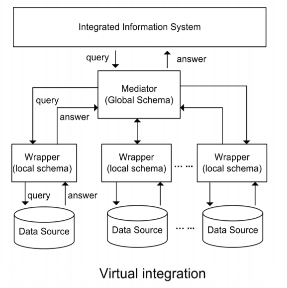
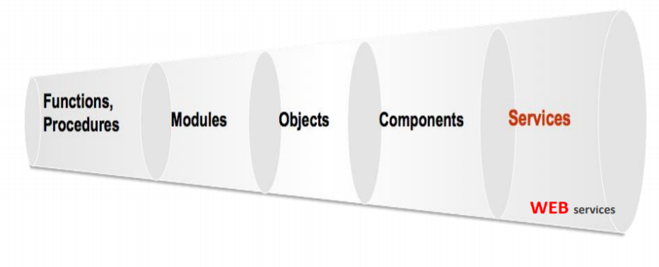

Week 1
Introduction
- Data Services are software services that help perople operate on data
- We make data services because nowadays data is very messy, we try to make it easier
- We tackle complexity and provide a layer of abstraction so help data consumers.
- Combining/Integration technologies to make something better
- Motivations: streamlined services, mergers/acquisitions, tech developement, competition, globalisation
- Problems: sometimes these apps are designed to be integrated. May be built on different platforms, use different schema etc
- We can combine different apps on a data level
- Maintain the original schemas, but wrap all of the sources in a wrapper
- They are wrapped so they can be queries by a universal mediator which the applications/customers can interact with

- We are constant abstracting -> led us to services (SOA - software as a service)
- Continously maintained by a provider for consumers
- Explicit purpose and interaction
- Composeable (LEGO blocks)

Data Access
- Data comes from everywhere
- Web, documents, emails, spreadsheets, videos etc
- Data comes in many formats
- unformatted, pdf, html, xml/json, csv etc
Unformatted
- Data from things like emails or newsletters. No clear formatting.
- To extract data that we want, there are NLP (Natural languange processing) and Machine Learning solutions which are developing.
- Can't expect it to be perfect!
PDF's are hard to extract data from.
- Need to extract text, images, tables
- Text is not bad, can do that with external programs -> but then its pretty much unformatted text.
- Tables are a problem for the computer to detect and then read, since theyre formatted in a specific way.
HTML
HTML is easier
- HTML is a semantic language - there is structure to things
- Up to the creator to label things to their own preferences.
- Can use things like Beautiful Soup to scrape HTML documents for specific tags/classes/ids.
XML/JSON
This is the good stuff.
- Structured data
- metadata present
- Easy traversal and extraction
- typical of APIs
CSV
This is good for tables
- Can be easily turned into a table/Excel
- Most CSV actually comes from spreadsheets
Relational vs "NoSQL"
Relational/SQL models are very popular and have proven themselves to be the data model of choice for many applications.
In recent years however, there has been the rise of NoSQL.
Why NoSQL?
- Scalable
- Expressive and Dynamic
- Not constrained to a schema/table
What's wrong with Relational?
- lots of joining
- mismatch between tables
- The MAIN thing is that it requires thoughtful modeling of data and to get some data itll need some querying skillz.
Concluding Statements
- Both Data Models work well
- Suitablility of a model depends on context
- Looking for something robust? Something with M-M and M-1 relationships? Go with a Relational DB. These are developed with high levels of consideration for what the data should look like and support joining tables (highly optimised).
- For something more scalable and flexible, NoSQL is great.
- Data comes from everywhere
- Web, documents, emails, spreadsheets, videos etc
- Data comes in many formats
- unformatted, pdf, html, xml/json, csv etc